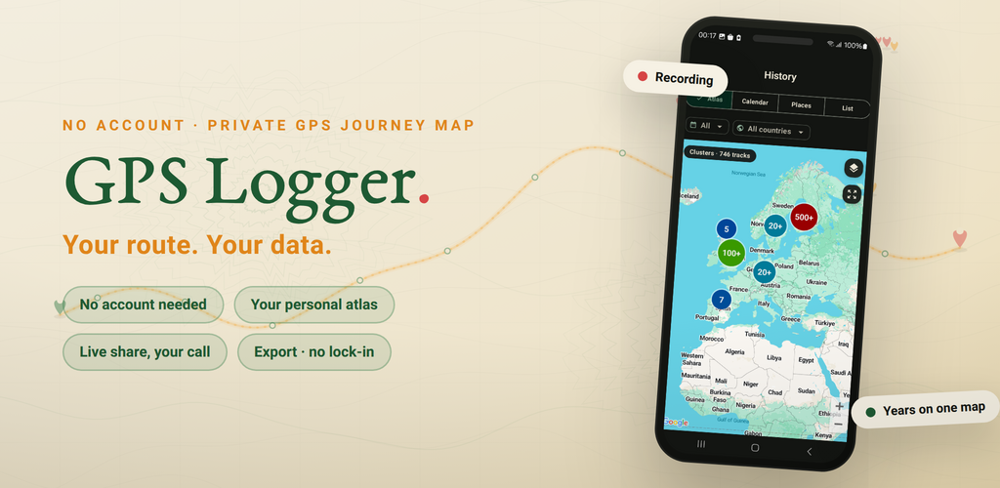
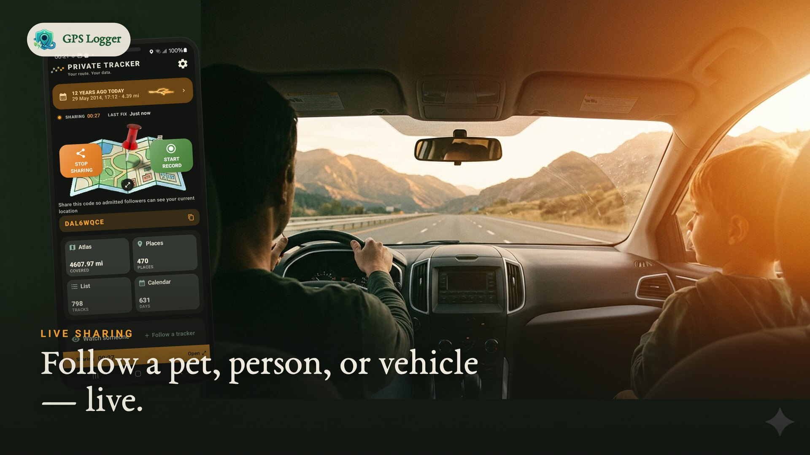
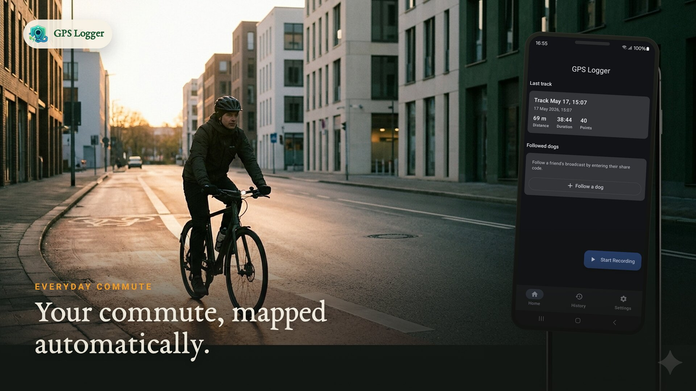
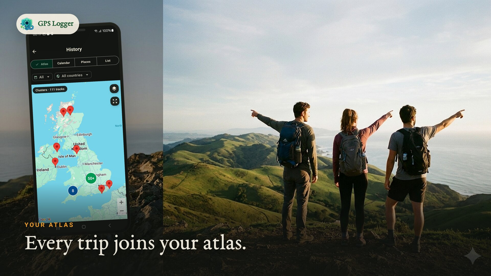
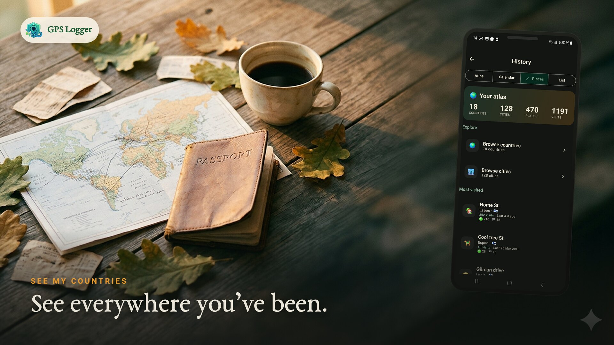
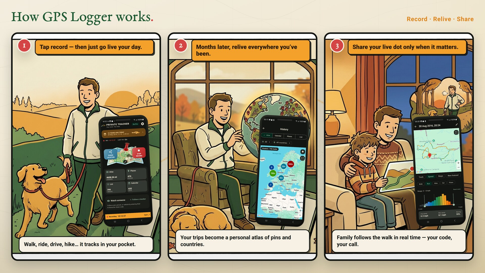

Record privately
Start a recording for any walk, hike, ride, drive, run or trip. It keeps tracking in the background and saves your route, distance, duration and speed when you stop.
Private journey map · GPS recorder
GPS Logger records your walks, hikes, rides and drives privately on your phone. Relive every trip on a map, watch a lifetime atlas of everywhere you've been take shape, and share your live position only when you want — then export anything as GPX or KML, with no lock-in.

Great for
Recorded and stored on your device — nothing leaves unless you choose.
Every trip builds a lifetime map, calendar and the places you return to.
GPX & KML per track, plus an all-history ZIP backup. Always portable.
Motion-aware tracking keeps battery low and records with the screen off.
Why people use GPS Logger




See it in motion

How it works

Tap once and go. It tracks in your pocket while you live your day.
Months later, browse a lifetime map, your places and your countries.
Send a live dot with a resettable code and a follower limit you set.
Feature set
Start a recording for any walk, hike, ride, drive, run or trip. It keeps tracking in the background and saves your route, distance, duration and speed when you stop.
A lifetime map of everywhere you've been, a calendar of tracked days, the places you keep returning to, and per-track maps with a speed view and full stats.
Share your current position with a resettable code and a follower limit you set (1–20). Only your current position is stored, and it's removed after you stop.
Export individual tracks as GPX or KML, or back up your whole history as a GPX ZIP. Open formats, your data, anytime.
Motion-adaptive tracking reduces GPS frequency when you're still. A foreground notification shows while recording, with optional auto-start after a reboot.
No account to record. Routes live on your phone, live sharing is opt-in, and you can reset your share code or delete tracks whenever you like.
Real app screens


GPS logging guides
Tutorial
Step-by-step route recording, background tracking, GPX export and whole-history backup.
Privacy
What stays on your phone, when live sharing sends data, and how to keep a private journey map.
Comparison
Choose between a private route journal, a training network, or both.
Workflow
Export portable tracks for mapping, GIS, trip archives and route analysis.
Free, Pro & Lifetime
Everything you need to start
Monthly or yearly subscription
One-time purchase
GPS Logger runs as a foreground service so recording continues when the screen is off or you switch apps, with a persistent notification while it tracks. Motion-adaptive sampling keeps battery use low, and optional auto-start can resume recording after a reboot.
Routes stay on your phone unless you choose to live-share or export them. Live sharing stores only your current position and removes it after you stop. Map display and diagnostics use service providers described in the privacy policy.
FAQ
No. Recording starts only when you start it, and stops when you stop. The one exception is optional auto-start after a reboot, which you enable yourself.
On your device. Nothing is uploaded unless you choose to live-share your current position or export a file.
You share a resettable code and pick a follower limit (1–20). Anyone with the code sees only your current position on a live map. The position is removed when you stop, and unattended positions auto-delete within 7 days.
Yes. Export any track as GPX or KML, or back up your entire history as a GPX ZIP. There's no lock-in.
Yes. Free includes recording, your atlas, calendar and places, your latest 10 tracks, export, a weekly GPX import, and 15 minutes a day of live sharing each way. Pro and Lifetime remove the limits.
Yes. A foreground service keeps recording in the background. For very long sessions, follow the in-app battery guidance so Android doesn't suspend it.
Record your next walk, ride or drive — and watch a map of your life begin to fill in. Free to start, yours to keep.
Get it on Google Play